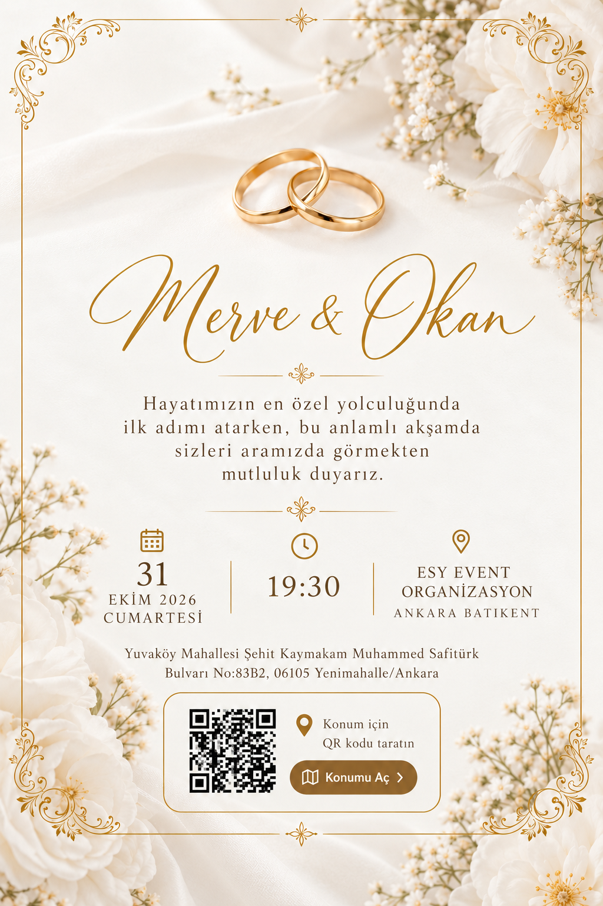
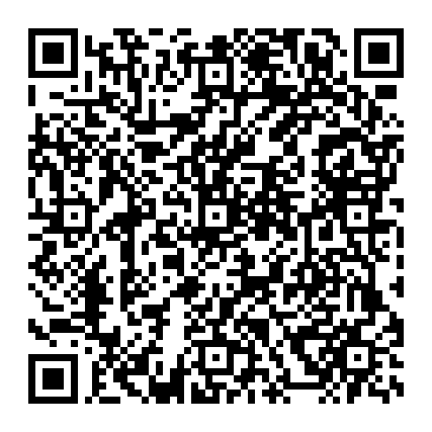

Merve & Okan
Hayatımızın en özel yolculuğunda ilk adımı atarken, bu anlamlı akşamda sizleri aramızda görmekten mutluluk duyarız. 31 Ekim 2026 Cumartesi, saat 19:30. ESY Event Organizasyon Ankara Batıkent. Yuvaköy Mahallesi Şehit Kaymakam Muhammed Safitürk Bulvarı No:83B2, 06105 Yenimahalle/Ankara.

